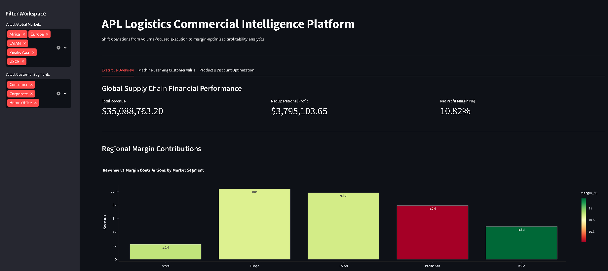
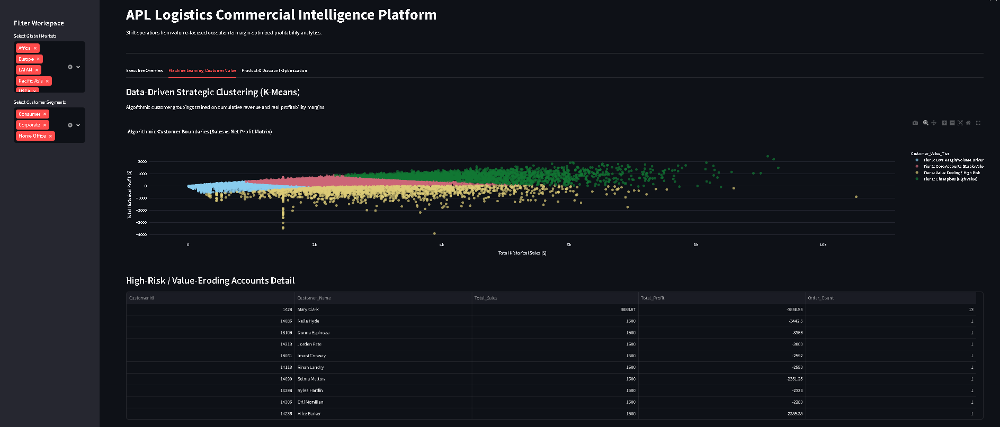
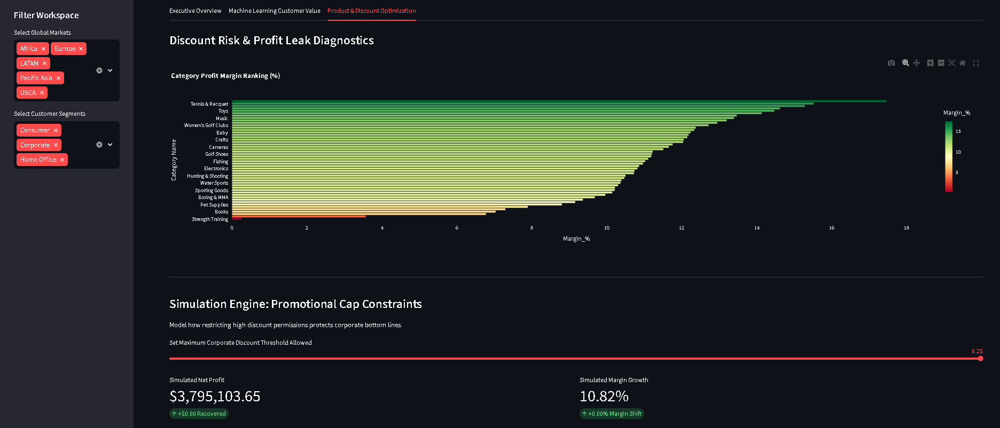

Shifting Supply Chain Analytics from Volume to Profitability Optimization
In modern third-party logistics (3PL) and global commercial operations, business intelligence frameworks capture massive volumes of structured transaction records. Historically, analytics implementations heavily prioritize volume-centric KPIs, including gross revenue velocity, order fulfillment metrics, and regional shipment counts. While tracking fulfillment volume is essential for standard logistics coordination, it masks systemic margin leak dependencies.
This initiative builds an end-to-end commercial intelligence system for APL Logistics. The primary strategic objective is to transition reporting infrastructure away from passive volume tracking and into automated, actionable margin diagnostics, protecting organizational capital from hidden cost traps.
Real-world logistics transactions are fundamentally messy, containing clerical omissions and structural anomalies. The raw database initially tracked 180,519 multi-line entries. To protect reporting truth, a python programmatic data-audit layer executed the following normalization pipelines:
Customer_Name space.Following execution, 8,659 corrupted or canceled records (4.8%) were isolated safely into an anomaly file, ensuring the core production dashboard layer processes 171,860 rows of pure verified financial entries.
Running multi-dimensional analytics queries across the clean data revealed the core financial status of global operations:
While boutique categories like Golf Bags & Carts run at an elite 17.46% net margin, high-volume segments act as structural capital traps. The Strength Training category pulled in an impressive $53,950.53 in sales volume but yielded a net profit of only $130.35—a near-zero operational margin of 0.24%.
Statistical grouping disproved the common management assumption that front-end marketing codes cause losses. When tracking orders by discount rates (0% through 25%), the transaction loss rate stayed completely flat at 18% to 19%. This proves losses are locked in by back-end freight carrier expenses and structural base underpricing, not promotion rates.

Figure 1: Streamlit Commercial Intelligence Executive UI Layout
To go beyond superficial ranking filters, an unsupervised machine learning model was developed. Customer metrics were aggregated per ID and normalized through scikit-learn's StandardScaler to ensure sales volume scale didn't hide profit margins. A K-Means Clustering model mathematically split the account space into 4 crisp value layers:
| Customer Value Tier Classification | Active Accounts | Avg Historical Sales | Avg Net Profit Per Account |
|---|---|---|---|
| Tier 1: Champions (High Value) | 2,589 | $4,431.93 | +$805.76 |
| Tier 2: Core Accounts (Stable Value) | 5,820 | $2,369.85 | +$369.74 |
| Tier 3: Low Margin/Volume Drivers | 9,773 | $410.02 | +$40.45 |
| Tier 4: Value Eroding / High Risk | 1,955 | $2,974.36 | -$428.77 |
Critical Operational Vulnerability: The 1,955 accounts inside Tier 4 mimic elite buyers on paper with high sales velocity, but their underlying freight handling structures leak heavy capital, generating a severe net loss of -$428.77 per account.

Figure 2: Algorithmic Customer Value Boundaries via K-Means Clustering Matrix
Based on the data outputs processed by the analytics script and validated by machine learning, the following data-driven adjustments are recommended for senior leadership:
By deploying these diagnostic metrics inside an interactive Streamlit application featuring Plotly visualizations and a dynamic promotional slider tool, the business shifts away from blind volume scaling and establishes modern, automated commercial margin intelligence.

Figure 3: Interactive Promotional Cap Constraint Simulation Engine UI